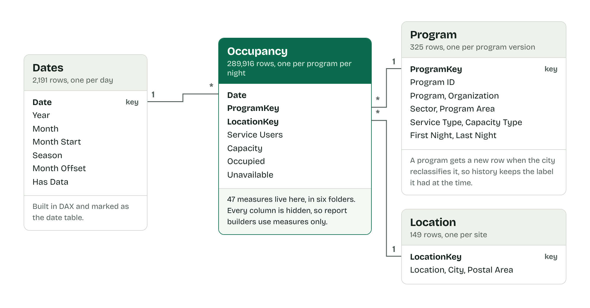

Power BI, public data
Toronto's shelter system in Power BI
How many people Toronto's shelters hold each night, how full they are, and what changed over the past year, in a four-page Power BI report built on a star schema with 47 documented DAX measures.
Data: City of Toronto Open Data, daily shelter occupancy and capacity, January 2021 to October 2026. 289,916 program nights.
Power BI, DAX, Power Query, Python, pandas

- people sheltered per night, October 2026
- 6,977
- fewer than in October 2025
- 19.8%
- of beds occupied in October 2026
- 96.2%
- DAX measures, each with a description
- 47
The question
How many people does Toronto's shelter system hold each night, how full is it, and what changed over the past year?
What the report shows
- Fewer people are in shelters than a year ago, but the system is still full. An average of 6,977 people were sheltered each night in October 2026, 19.8% fewer than in October 2025 and 31.8% below the peak of 10,228 in January 2025. Beds stayed 96.2% occupied and rooms 99.2%, because capacity shrank too: beds available per night fell from 4,288 to 3,756.
- Most of the fall came from the temporary refugee response. That program area went from 1,969 people a night to 738, which is 72% of the total drop. The base shelter system fell by 446 people a night.
- Two in three program nights were completely full in October 2026 (67.3%), down from a high of 88.8% in August 2024. Youth and family programs were full least often, mixed adult programs most often.


How it is built
- Data preparation in Python.
prepare_data.pydownloads six yearly files from Toronto Open Data, reconciles three different date formats and stray spaces in names, and writes a star schema as three CSV files. - A star schema with history kept. The fact table has one row per program per night. The city reclassifies programs over time (44 of 279 changed at least once), so the program table keeps one row per version, the idea behind a type 2 slowly changing dimension.
- Beds and rooms are never added together. Family and hotel programs count rooms, the rest count beds, so occupancy is reported separately for each.
- Measures only. Implicit measures are turned off and every fact column is hidden, so each number on a visual comes from one of 47 named measures, grouped in folders and documented with descriptions.
- Titles that update themselves. Card and chart titles are measures, such as "People sheltered per night, October 2026", so they stay right after every refresh.
- Saved as a Power BI project. The model is in TMDL and the report in PBIR, so every change to a measure or a visual reads as text in Git.

DAX worth a look
The prior-year comparison only shifts dates that have data, so a part year is compared with the same part of the year before. The latest-month cards ignore the date filter but still respond to the sector and program filters.
People per Night = DIVIDE ( [Person Nights], [Nights Reported] )
People per Night PY =
CALCULATE (
[People per Night],
CALCULATETABLE (
SAMEPERIODLASTYEAR ( Dates[Date] ),
Dates[Has Data] = TRUE ()
)
)
People per Night (Latest Month) =
CALCULATE (
[People per Night],
REMOVEFILTERS ( Dates ),
Dates[Month Offset] = 0
)How the numbers are checked
reconcile.py loads the same three CSV files with pandas and recalculates the headline figures without Power BI. The report's Checks page shows the same figures from the DAX measures, so a wrong relationship or filter shows up as a mismatch.
| Figure | Python |
|---|---|
| Program nights | 289,916 |
| Person nights | 17,941,778 |
| Programs | 279 |
| People per night, all dates | 8,423.4 |
| Bed occupancy, all dates | 97.55% |
| Room occupancy, all dates | 98.41% |
| People per night, October 2026 | 6,976.9 |
| People per night, October 2025 | 8,697.6 |
| Change from a year earlier | -19.78% |
| Bed occupancy, October 2026 | 96.23% |
| Program nights full, October 2026 | 67.35% |
| Peak month | January 2025, 10,227.5 a night |

Files
| File | What it is |
|---|---|
ShelterSystem.pbix | The report as one Power BI file, with the data loaded |
powerbi/ | The same report as a Power BI project: TMDL model and PBIR report |
prepare_data.py | Downloads the source files and writes the star schema to data/ |
reconcile.py | Recalculates the headline figures in pandas |
checks/expected_values.csv | The figures the report has to match |
Run it
To see the report, open ShelterSystem.pbix in Power BI Desktop, or open powerbi/ShelterSystem.pbip and choose Refresh. The model reads the data from this repository at a fixed commit, so a refresh gives the same numbers. To rebuild the data and the expected figures:
pip install pandas
python prepare_data.py
python reconcile.py